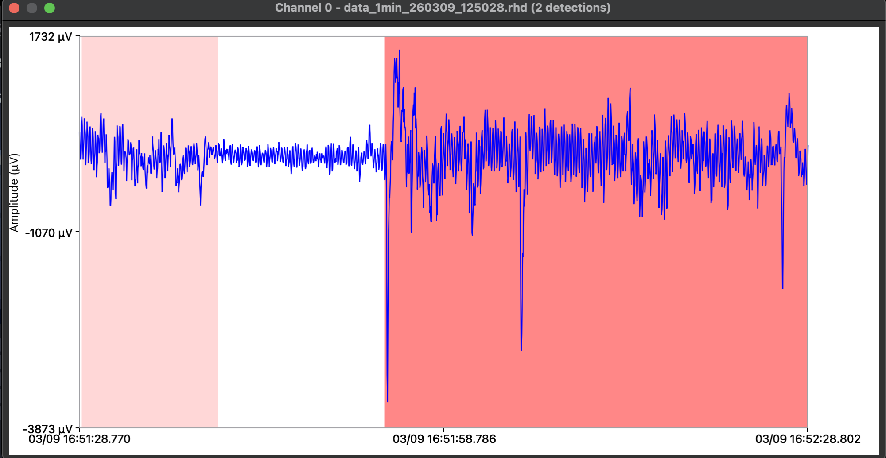

A reconfigurable neural processing architecture for closed-loop seizure treatment. Built on Yale BCI research.
FPGA-based RTL pipeline detects seizure onset in real time using NEO signal processing across all neural channels simultaneously.
Configurable threshold and gating logic identifies seizure onset before generalization — sample-accurate, channel-independent.
Charge-balanced biphasic stimulation pulses delivered through implanted electrodes disrupt cortical synchrony and stop the seizure.
Unlike every competitor, neuræ is not fixed-function. The GALS architecture adapts to any neural task — at FDA-safe power.
Validated at Yale School of Medicine. 130 seizure events detected across rodent subjects using our closed-loop FPGA pipeline. Red regions mark confirmed detections.

16-bit ADC samples streamed from Intan RHX via RHD format. Channel-interleaved blocks transferred to FPGA in real time.
Nonlinear energy operator (NEO) highlights transient oscillatory activity. Configurable threshold marks high-energy detections per channel.
State machine tracks detection persistence using transition counters. Converts sample-level detections into temporally bounded seizure events.
Biphasic pulses delivered through implanted electrodes on detection. Disrupts cortical synchrony. Interrupts seizure before generalization.
CPSC 490 / 4900 Senior Thesis — Seizure Treatment BCI.
Active collaboration with Yale School of Medicine.
Full RTL-to-GDS implementation of the MOS 6502 processor. Complete physical sign-off including DRC, LVS, and STA.
Active collaboration on tape-out for Microsoft's Technology for Accessible Brains (TAB) initiative. Hands-on ASIC physical design pipeline.
We aim to build a research-first institution focused on reconfigurable neural architectures — designed to handle data-intensive AI workloads, scale to full ASIC tape-out, and operate within FDA power constraints. Not a lab extension. An independent silicon house.
Let's build it together.